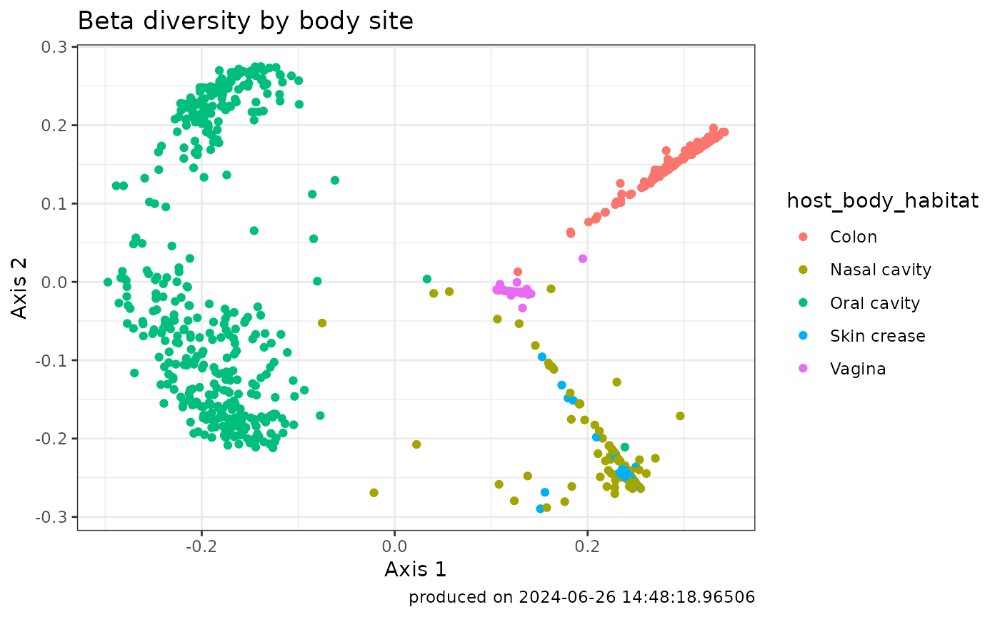

library(MicrobiomeDB, quietly = TRUE)
#> Warning: replacing previous import 'S4Arrays::makeNindexFromArrayViewport' by
#> 'DelayedArray::makeNindexFromArrayViewport' when loading 'SummarizedExperiment'
library(tidyverse, quietly = TRUE)
#> ── Attaching core tidyverse packages ──────────────────────── tidyverse 2.0.0 ──
#> ✔ dplyr 1.1.4 ✔ readr 2.1.5
#> ✔ forcats 1.0.0 ✔ stringr 1.5.1
#> ✔ ggplot2 3.5.1 ✔ tibble 3.2.1
#> ✔ lubridate 1.9.3 ✔ tidyr 1.3.1
#> ✔ purrr 1.0.2
#> ── Conflicts ────────────────────────────────────────── tidyverse_conflicts() ──
#> ✖ dplyr::filter() masks stats::filter()
#> ✖ dplyr::lag() masks stats::lag()
#> ℹ Use the conflicted package (<http://conflicted.r-lib.org/>) to force all conflicts to become errorsWhat is Beta Diversity?
Beta diversity measures the dissimilarity or diversity between different microbial communities. In the context of microbiome studies, it quantifies how microbial compositions vary across samples. Understanding beta diversity allows researchers to explore the unique features of each sample and identify patterns in microbial community structure.
Why Care About Beta Diversity?
Researchers are interested in beta diversity for several reasons:
Ecological Insights: Beta diversity helps uncover the ecological differences between microbial communities in different environments or conditions.
Disease Studies: In medical research, beta diversity can highlight variations in microbial communities associated with health or disease states.
Community Dynamics: Studying beta diversity provides information about how microbial communities change over time or in response to specific factors.
How is Beta Diversity Calculated?
Beta Diversity can be calculated by first producing a dissimilarity matrix for all samples and then applying a dimensional reduction technique to the dissimilarity matrix.
This package offers flexibility in calculating beta diversity by providing multiple dissimilarity matrix options:
Bray-Curtis Dissimilarity
The Bray-Curtis algorithm measures compositional dissimilarity based on both the presence and abundance of taxa. It calculates the normalized absolute differences in taxon abundance between two samples, providing a metric that ranges from 0 (complete similarity) to 1 (complete dissimilarity).
## first lets find some interesting data
microbiomeData::getCuratedDatasetNames()
#> [1] "Anopheles_albimanus" "BONUS"
#> [3] "Bangladesh" "DailyBaby"
#> [5] "DiabImmune" "ECAM"
#> [7] "EcoCF" "FARMM"
#> [9] "GEMS1" "HMP_V1V3"
#> [11] "HMP_V3V5" "HMP_WGS"
#> [13] "Leishmaniasis" "MALED_2yr"
#> [15] "MALED_diarrhea" "MORDOR"
#> [17] "Malaysia_helminth" "NICU_NEC"
#> [19] "PIH_Uganda" "PretermInfantResistome1"
#> [21] "PretermInfantResistome2" "UgandaMaternal"
getCollectionNames(microbiomeData::HMP_WGS)
#> [1] "WGS 4th level EC metagenome abundance data"
#> [2] "WGS Metagenome enzyme pathway abundance data"
#> [3] "WGS Metagenome enzyme pathway coverage data"
#> [4] "WGS Genus"
#> [5] "WGS Species"
#> [6] "WGS Family"
#> [7] "WGS Order"
#> [8] "WGS Phylum"
#> [9] "WGS Class"
#> [10] "WGS Normalized number of taxon-specific sequence matches"
#> [11] "WGS Kingdom"
## grab a collection we like
HMP_WGS_species <- getCollection(microbiomeData::HMP_WGS, 'WGS Species')
## get a betaDiv ComputeResult
betaDiv <- betaDiv(HMP_WGS_species, method = "bray")
#>
#> 2024-04-24 17:37:14.829383 Received df table with 741 samples and 704 taxa.
#>
#> 2024-04-24 17:37:15.155728 Computed dissimilarity matrix.
#>
#> 2024-04-24 17:37:16.089393 Finished ordination step.
#>
#> 2024-04-24 17:37:16.11976 Beta diversity computation completed with parameters recordIdColumn= Metagenomic_sequencing_assay_Id , method = bray , k = 2 , verbose = TRUEJaccard Dissimilarity
Measures dissimilarity based on the presence-absence of taxa. It quantifies the proportion of taxa that are not shared between two samples.
HMP_WGS_species <- getCollection(microbiomeData::HMP_WGS, 'WGS Species')
betaDiv <- betaDiv(HMP_WGS_species, method = "jaccard")
#>
#> 2024-04-24 17:37:16.269667 Received df table with 741 samples and 704 taxa.
#>
#> 2024-04-24 17:37:16.581029 Computed dissimilarity matrix.
#>
#> 2024-04-24 17:37:16.769338 Finished ordination step.
#>
#> 2024-04-24 17:37:16.780671 Beta diversity computation completed with parameters recordIdColumn= Metagenomic_sequencing_assay_Id , method = jaccard , k = 2 , verbose = TRUEJensen-Shannon Divergence (JSD)
Captures dissimilarity considering both abundance and presence-absence information. It is a symmetric version of the Kullback-Leibler Divergence, providing a measure of dissimilarity between probability distributions.
HMP_WGS_species <- getCollection(microbiomeData::HMP_WGS, 'WGS Species')
betaDiv <- betaDiv(HMP_WGS_species, method = "jsd")
#>
#> 2024-04-24 17:37:16.914771 Received df table with 741 samples and 704 taxa.
#>
#> 2024-04-24 17:37:23.70449 Computed dissimilarity matrix.
#>
#> 2024-04-24 17:37:23.903281 Finished ordination step.
#>
#> 2024-04-24 17:37:23.90968 Beta diversity computation completed with parameters recordIdColumn= Metagenomic_sequencing_assay_Id , method = jsd , k = 2 , verbose = TRUEPrincipal Coordinate Analysis (PCoA):
PCoA is a dimensional reduction technique applied to the
dissimilarity matrix, providing a visual representation of the
relationships between samples in a lower-dimensional space. It
transforms the dissimilarity matrix into a set of orthogonal axes
(principal coordinates) that capture the maximum variance in the data.
The PCoA plot allows researchers to visualize the spatial arrangement of
samples, aiding in the interpretation of beta diversity. The
MicrobiomeDB package performs PCoA as part of the
betaDiv method.
Interpreting PCoA Results
The following code will produce a PCoA plot:
## choose one or more metadata variables to integrate with the compute result
betaDiv_withMetadata <- getComputeResultWithMetadata(
betaDiv,
microbiomeData::HMP_WGS,
metadataVariables = c('host_body_habitat'))
## plot beta diversity
ggplot2::ggplot(betaDiv_withMetadata) +
aes(x=Axis1, y=Axis2, color=host_body_habitat) +
geom_point() +
labs(y= "Axis 2", x = "Axis 1",
title="Beta diversity by body site",
caption=paste0("produced on ", Sys.time())) +
theme_bw()
The PCoA plot visually represents the dissimilarity between samples. Each point on the plot corresponds to a sample, and the position of the points reflects their relationships based on beta diversity. Here’s how to interpret the PCoA plot:
Axes Representation:
The axes (principal coordinates) on the PCoA plot represent the dimensions of maximum variance in the dissimilarity matrix.
The distance between points on the plot reflects the dissimilarity between corresponding samples.
Each axis explains a certain percentage of the total variation in the data.
Interpreting Axis Direction:
The direction of the axes indicates the major patterns of dissimilarity in the data.
Samples that cluster together on the plot are more similar to each other, while those farther apart are more dissimilar.